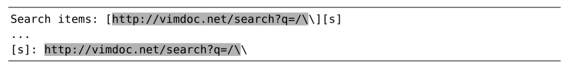

）
）技巧78转义问题字符
\V原义开关使得按原义查找文本变得更容易，因为符号.、+以及*的特殊含义被屏蔽掉了。但还有一些字符，其特殊含义无法被屏蔽。本节作为高级技巧，将研究如何处理这些字符。
正向查找时要转义/字符
以下文本摘录自一篇Markdown文档（实际的URL为vimdoc.sourceforge.net(3)，此处为了适应版面的需要，将其缩写为vimdoc.net）：
假设我们想找到所有出现过URL “http://vim-doc.net/search?q=/\\”的地方。我们不必手动输入这些内容，只需将其复制到某个寄存器，然后再粘贴到查找域即可。由于我们想精确地匹配这段文本，因此要使用 \V 原义开关。
只要我们的光标位于方括号之中，就都可以使用命令"uyi[（为了方便记忆，用u表示URL）将此URL复制到寄存器u。然后我们输入/\V<C-r>u<CR>，即可将此寄存器的内容填充至查找域了。最终的查找提示符类似于这样：
➾/\Vhttp://vimdoc.net/search?q=/\\
当我们执行此查找命令时，会得到以下结果：
这到底是怎么回事？当我们把完整的URL粘贴至查找域后，Vim却把首次出现的符号 / 解析成了查找域结束符（参见查找域结束符）。因此，所有位于首个正斜杠之后的内容都被忽略掉了，所以我们的查找字符串仅剩下了http:。
当进行正向查找时，我们必须要转义符号 /。而且无论执行的是very magic查找（使用模式开关\v）还是very nomagic查找（使用原义开关\V），都需要转义。让我们修正一下之前的查找命令，为每个 / 加上反斜杠前缀：
➾/\Vhttp:\/\/vimdoc.net\/search?q=\/\\
这一次查找的结果与我们预期的更为接近了：
但还不算完美，因为匹配的结果缺少了最后一个反斜杠。我们将很快揭晓其中的奥秘，但是首先，让我们考虑一下反向查找吧。
反向查找时要转义?号
当执行反向查找时，符号 ? 会被当作查找域的结束符。这意味着我们不必转义符号 / 了，但要对符号 ? 进行转义。
注意：如果我们对从寄存器u复制而来的URL进行反向查找时，会发生什么事情。
➾?http://vimdoc.net/search?q=/\\
在没有转义任何内容之前，Vim将匹配字符串“http://vimdoc.net/search”：
这个结果比未转义过的正向查找要好多了，但仍未匹配完整的URL。如果我们将?号加上反斜杠前缀，会得到更好的结果：
➾?http://vimdoc.net/search\?q=/\\
以下是新的匹配结果：

每次都要转义符号 \
在查找域中，还有一个字符需要转义，即反斜杠。通常情况下，一个\的出现预示着紧挨着它后面的字符将会得到某种特殊对待。如果我们将其加倍，变为\\后，前者则会消除后者的特殊含义。实际上是让Vim查找一个反斜杠。
在我们的示例文本中，要查找的URL包含两个连续的反斜杠，因此，我们必须在查找域中为每个反斜杠各添加一个反斜杠。在正向查找中，我们最终得这样：
➾/\Vhttp:\/\/vimdoc.net\/search?q=\/\\\\
完工！查询条件终于匹配了整个URL：
无论我们采用的是正向还是反向查找方式，反斜杠字符永远都需要转义。
用编程的方式转义字符
用手动方式转义字符既耗时费力，又容易出错。幸运的是，Vim脚本提供了一个库函数，帮助我们完成这项艰巨的任务，即escape({string},{chars})（参见:h escape()）
{chars}参数将指定哪些字符需要用反斜杠转义。如果我们要进行正向查找，可以调用escape(@u,'/\')，它会为每个/与\加上反斜杠前缀。但如果进行的是反向查找，则要换用escape(@u,'?\')。
首先，要确保要查找的URL仍保存在寄存器u中。然后，我们输入/或者?调出查找提示符，二者均能正确工作。最后，要依次输入原义开关\V与<C-r>=。在完成以上操作后，Vim就会从查找提示符的状态切换到表达寄存器提示符的状态了。现在我们输入以下命令：
➾=escape(@u, getcmdtype().'\')
当我们按下<CR>后，escape()函数将被执行，其返回值将会被插入到查找域。如果我们正在进行正向查找，getcmdtype()函数只是简单地返回符号/，而在反向查找时，该函数将返回符号？（参见:h getcmdtype()）。在Vim脚本中，.操作符用来连接字符串，因此，在正向查找时，getcmdtype().'\' 将产生“/\”，而在反向查找时，会得到“?\”。最终结果表明，无论我们采用哪种查找方式，表达式都将对寄存器u中的所有内容进行转义，因此查找工作顺利结束。
切换至表达式寄存器的状态以及手动调用escape()函数，仍然会涉及很多输入。如果再多用一点Vim脚本，操作即可实现自动化，使人们用起来更方便。请跳到技巧86，参考其中的实例。
查找域结束符
你可能会觉得奇怪，为什么查找域会把某个字符视为结束符呢？它为什么不把所有位于查找提示符之后的内容都纳入查找匹配呢？答案是如果在查找域结束符之后附加某些标志位，可以调整Vim查找命令的行为。例如，如果我们运行命令/vim/e<CR>，光标将会移到每个匹配的结尾，而非起始。在技巧83中，我们将学习如何利用此功能，而不是被其左右。
还有一种输入模式的方式，让我们不必担心查找域结束符的牵绊，但它只能用于GVim，即使用:promptfind命令（参见:h :promptfind）。该命令会调出一个带有“查找”标签的图形对话框，你可以在这里输入/与?字符而无需转义。遗憾的是，字符\以及换行符依然会引发问题。
(1) http://matt.might.net/articles/shell-scripts-for-passive-voice-weasel-words-duplicates/
(2) http://www.regular-expressions.info/lookaround.html
(3) http://vimdoc.sourceforge.net/search.php?search=/\\&docs=help